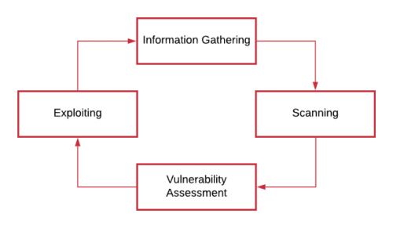

Exploitation
In this phase we verify if a vulnerabilities really exists and if is possible exploiting them.
so what we have to do:
• checks and validates vulnerability
• widen of the attack surface increasing privileges on the target hosts and/or network
exploiting a host helps to discover new targets in its network and so we can repeat the process from the Information Gathering phase. The penetration test is a cycle process that ends when there are no more systems and service to exploit
Test against a Production environment?
If we have to testing against a Production environment,
first we should test the exploit inside a VM.
The VM have to run the same version of software as your target. We need to monitor the attack carefully with a tool like Wireshark and explore the effects of your attack on the VM afterward.
If we are running the attack against the client’s Test environment, then wireshark may not be necessary.
RCE
Remote code execution occur when an user is able to execute operating system's commands on the remote system.
The code execution is rarely a vulnerability on its own rather is a result of different vulnerabilities that allow the execution of OS commands
{kind=link}